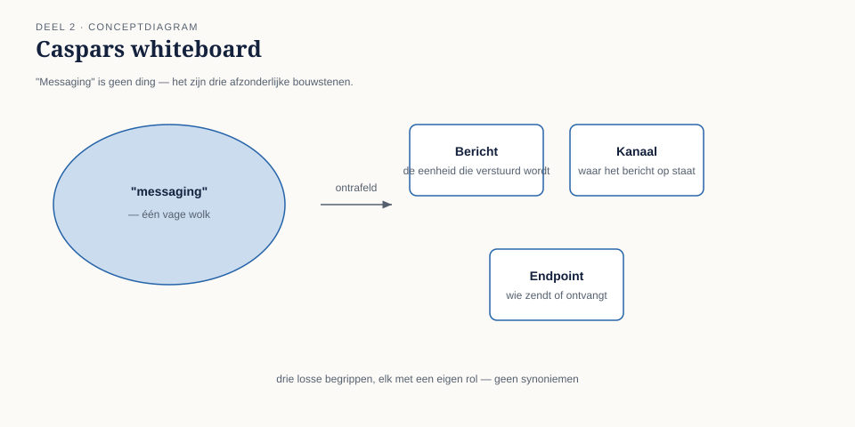

Cursus Enterprise Integration Patterns · Niveau 1 (Fundament) · Deel 2 van 30
Messagingfundamenten: kanaal, bericht, endpoint
Twee weken na het incident van deel 1 presenteerde Caspar zijn eerste ontwerp voor de ontkoppeling van Werkgeversportaal en KERN. Op het whiteboard stond één rechthoek met de tekst "message queue" en twee pijlen erheen. Zijn architectuurboard stelde drie vragen die hij geen van drieën scherp kon beantwoorden:
8secties
3figuren
12controlevragen
1kernzinnen
Niveau 1: ① Van synchroon naar asynchroon: waarom messaging → ② Messagingfundamenten: kanaal, bericht, endpoint (hier) → ③ Message Construction: command, event, document en request-reply → ④ Basisrouting: content-based router en message filter → ⑤ Basistransformatie: translator, envelope wrapper, normalizer → ⑥ Point-to-point vs. publish-subscribe kanalen, verdiept → ⑦ Betrouwbaarheid I: garanties en idempotentie → ⑧ Betrouwbaarheid II: volgorde en guaranteed delivery → ⑨ Foutafhandeling basis: dead letter channel en invalid message channel → ⑩ Examentraining en capstone: de verdediging
Twee weken na het incident van deel 1 presenteerde Caspar zijn eerste ontwerp voor de ontkoppeling van Werkgeversportaal en KERN. Op het whiteboard stond één rechthoek met de tekst "message queue" en twee pijlen erheen. Zijn architectuurboard stelde drie vragen die hij geen van drieën scherp kon beantwoorden:
Wat staat er precies ín die rechthoek — is dat één ding, of zijn dat meerdere dingen?
Als het Werkgeversportaal en het Nabestaandenloket allebei iets met dezelfde mutatie moeten doen, is dat dan dezelfde rechthoek of twee?
Waar in KERN wordt straks de code aangepast — en waar niet?
Caspar had, zoals hij zelf toegaf, "een wolk getekend en er messaging op geschreven". Dat is een veelgemaakte fout bij de eerste stap richting asynchrone integratie: het woord "messaging" wordt gebruikt als één concept, terwijl het uit drie onderscheiden bouwstenen bestaat die stuk voor stuk eigen ontwerpbeslissingen vergen.
Dit deel maakt die drie bouwstenen expliciet: het kanaal, het bericht, en het endpoint. Alle patronen die in niveau 1 en 2 volgen, zijn combinaties en verbijzonderingen van deze drie.

Figuur 2-1 — Caspars whiteboard: de ene wolk versus de drie afzonderlijke bouwstenen, met bij elk een korte definitiezin
02
2.1 Het kanaal
Sectie 2 van 8
Een message channel is een virtuele pijp tussen twee of meer applicaties waarlangs berichten stromen. "Virtueel" is hier het sleutelwoord: het kanaal is geen fysieke draad, het is een logische afspraak — een naam, een adres, een wachtrij of topic — waarover zender en ontvanger het eens zijn.
Drie eigenschappen van een kanaal bepalen vrijwel elke volgende ontwerpkeuze in deze cursus:
Een kanaal draagt precies één soort bericht. Niet omdat de techniek dat afdwingt — de meeste brokers laten willekeurige inhoud toe — maar omdat een kanaal zonder deze discipline onbruikbaar wordt. Als het "mutatiekanaal" zowel dienstverbandmutaties als adreswijzigingen als foutmeldingen bevat, moet elke ontvanger eerst uitzoeken wat voor bericht dit is voordat hij weet hoe te reageren. Dat is precies het soort vermenging waar Caspars "wolk" aan leed.
Een kanaal heeft een eigenaar van het contract, niet van de techniek. Er moet iets of iemand zijn die vastlegt wat er wél en niet over dit kanaal mag — vergelijkbaar met een API-contract, maar dan voor een berichtformaat in plaats van een resource. Zonder die eigenaar verwatert een kanaal binnen een jaar tot een verzameling losse afspraken die niemand meer overziet.
Een kanaal is punt-tot-punt of publish-subscribe, nooit allebei tegelijk voor dezelfde toepassing. Bij point-to-point haalt precies één ontvanger elk bericht van het kanaal — geschikt voor werk dat maar één keer gedaan moet worden, zoals "verwerk deze mutatie". Bij publish-subscribe ontvangt élke geabonneerde ontvanger een kopie van elk bericht — geschikt voor gebeurtenissen die meerdere partijen aangaan, zoals "er is een mutatie geweest". Dit onderscheid is zo fundamenteel dat het in deel 6 een volledig eigen paragraaf krijgt; voor nu is het genoeg om te weten dat de keuze vroeg in het ontwerp gemaakt moet worden, want zij bepaalt de hele verdere vormgeving.
Kernzin 2 van de cursus: een kanaal is een contract met een naam, niet een technisch detail — behandel het ontwerp ervan met dezelfde zorgvuldigheid als een API-contract.
Controlevraag — Opdracht 2.1 — Wolk of drie bouwstenen
Uit Werkboek deel 2, Opdracht 2.1 — Wolk of drie bouwstenen
Hieronder staat een ontwerpbeschrijving zoals Caspar hem oorspronkelijk presenteerde. Herschrijf hem in termen van kanaal, bericht en endpoint, en benoem expliciet wat er in de oorspronkelijke tekst ontbrak.
"Het Werkgeversportaal stuurt de mutatie naar de message queue. KERN pakt hem op, verwerkt hem, en zet het resultaat terug op de queue zodat het Nabestaandenloket en de audit-trail het ook kunnen zien."
→Uitwerking tonenToon
Wat ontbreekt: er wordt gesproken over "de queue" (enkelvoud) terwijl er ten minste twee verschillende soorten verkeer doorheen lopen — de opdracht aan KERN (command) en het resultaat dat drie andere partijen aangaat (event). Er wordt niet benoemd wie de eigenaar is van het kanaalcontract, en er is geen endpoint expliciet gemaakt — "stuurt naar" en "pakt op" suggereren dat de applicatielogica zelf met de queue praat.
Herschreven:
Het Werkgeversportaal heeft een endpoint dat een mutatie verpakt als command message (met een correlatie-ID) en plaatst op het mutatiekanaal (point-to-point, eigenaar: integratieteam, contract: mutatieformaat v1). KERN heeft een endpoint dat dit kanaal afneemt, de opdracht doorgeeft aan de bestaande verwerkingslogica, en na afronding een event message plaatst op het mutatie-gebeurd-kanaal (publish-subscribe). Nabestaandenloket en audit-trail hebben elk een eigen endpoint dat op dat kanaal is geabonneerd.
Wat je hier moet meenemen: "de queue" is geen ontwerp, het is een black box die drie afzonderlijke ontwerpbeslissingen verbergt.
03
2.2 Het bericht
Sectie 3 van 8
Een message is de eenheid die over een kanaal reist. Elk bericht bestaat, ongeacht techniek of formaat, uit twee delen die je altijd afzonderlijk moet ontwerpen:
De header bevat metadata over het bericht: waar komt het vandaan, wat voor soort bericht is dit, hoort het bij een lopend gesprek (zie 2.4, correlatie), wanneer is het verzonden, hoe lang is het geldig. De header is voor de infrastructuur en voor routeringslogica — niet voor de inhoud van de zaak zelf.
De payload (body) bevat de eigenlijke inhoud: bij Meridiaan bijvoorbeeld het BSN-gehashte deelnemersnummer, het type mutatie, de gewijzigde velden.
Dit onderscheid is niet decoratief. Een router die op inhoud beslist (zie deel 4) moet dat idealiter doen op basis van header-velden, niet door de hele payload te moeten inlezen en interpreteren — anders is elke component in de keten gedwongen het volledige berichtformaat te kennen, ook onderdelen waarmee hij niets doet. Dat vergroot koppeling precies op de plek waar messaging die juist moest verminderen.
Drie berichtstypen, drie bedoelingen.
Type
Bedoeling
Voorbeeld bij Meridiaan
Command message
"Doe dit" — een expliciete opdracht aan één verantwoordelijke ontvanger
"Verwerk deze dienstverbandmutatie" naar KERN
Event message
"Dit is gebeurd" — een feit, zonder te voorschrijven wat de ontvanger ermee doet
"Dienstverband is gewijzigd" naar wie er ook maar in geïnteresseerd is
Document message
"Hier zijn gegevens" — een dataoverdracht zonder opdracht én zonder gebeurtenis-connotatie
Een volledig deelnemersdossier ten behoeve van een rapportage
Het onderscheid tussen command en event is de belangrijkste van de drie, en de meest verwaarloosde in de praktijk. Een command heeft precies één logische ontvanger die verantwoordelijk is voor de uitvoering — ook als er technisch meerdere systemen naar luisteren, is er één die "ja" of "nee" mag zeggen. Een event heeft geen enkele ontvanger die iets verplicht is te doen; het feit is gebeurd, punt, en het is aan elke luisteraar zelf om te bepalen of het relevant is.
Figuur 2-2 — anatomie van een bericht: header (herkomst, type, correlatie, timestamp) boven de payload (inhoud), met een zijbalk die de drie berichtstypen toont als drie gekleurde enveloppen
Caspars eerste ontwerpfout, bij het navragen, bleek precies hier te zitten: zijn "mutatiekanaal" droeg zowel commands (verwerk dit) als events (dit is gewijzigd) door elkaar, zonder dat een header-veld dat onderscheid maakte. Het Nabestaandenloket, dat alleen in het event geïnteresseerd was, moest elk bericht openen om te zien of het iets met hem te maken had.
Controlevraag — Opdracht 2.2 — Command, event of document
Uit Werkboek deel 2, Opdracht 2.2 — Command, event of document
Bepaal voor elk bericht of het een command, event of document message is, en motiveer.
"Ken premiepercentage 18,3% toe aan deelnemer 00482 per 1 januari."
"Deelnemer 00482 is per 1 januari overleden."
"Hierbij het volledige deelnemersdossier van 00482 ten behoeve van de jaaropgave."
"Verwerk de adreswijziging van werkgever 771."
"De adreswijziging van werkgever 771 is verwerkt."
→Uitwerking tonenToon
a. Command. Een expliciete opdracht met één verantwoordelijke uitvoerder (het systeem dat premiepercentages beheert).
b. Event. Een feit, geen opdracht — het is aan elke geabonneerde partij (uitkeringsadministratie, Nabestaandenloket, communicatie naar nabestaanden) om te bepalen wat dit voor hen betekent.
c. Document. Geen opdracht, geen gebeurtenis — puur een gegevensoverdracht.
d. Command.
e. Event. Let op het verschil met d: dit is niet dezelfde boodschap in een andere vorm, het is een ándere boodschap — een nieuw feit dat ontstaat ná de uitvoering van de opdracht uit d.
Discussiepunt: a en b lijken op elkaar (allebei over dezelfde deelnemer, allebei een wijziging) maar zijn fundamenteel verschillend gestructureerd. Vraag door: wat zou er misgaan als b als command werd verstuurd naar alle geabonneerde systemen? Antwoord: dan zou elk systeem verplicht zijn om te reageren, terwijl de bedoeling juist is dat elk systeem zelf beoordeelt of en hoe het reageert.
04
2.3 Het endpoint
Sectie 4 van 8
Een message endpoint is de plek waar een applicatie het kanaal raakt — het stukje code dat verantwoordelijk is voor het versturen naar, of ontvangen van, een kanaal. Endpoints zijn de grens tussen "applicatielogica" (wat KERN inhoudelijk doet met een mutatie) en "messaginglogica" (hoe die mutatie het kanaal op- en afkomt).
Dit onderscheid is waarom deel 2 relevant is voor de vraag die het architectuurboard aan Caspar stelde: waar in KERN wordt straks de code aangepast? Het antwoord hoort te zijn: uitsluitend in het endpoint, nooit dieper in de applicatielogica. Als de verwerkingslogica van KERN zelf moet weten dát er een kanaal is, ontstaat precies de starre koppeling die WGP 2.0 fataal werd — alleen nu met een wachtrij ertussen in plaats van een directe aanroep.
Een goed ontworpen endpoint heeft daarom twee eigenschappen:
Het kent het kanaal, de applicatielogica kent het endpoint. KERN roept niet "stuur dit bericht naar kanaal X" aan, maar "verwerk deze mutatie" — het endpoint vertaalt dat intern naar het plaatsen op een kanaal. Andersom: het endpoint roept niet rechtstreeks diep in KERN's domeinlogica, maar levert een binnengekomen bericht af op een punt dat de applicatie zelf bepaalt.
Het is vervangbaar zonder de applicatielogica te raken. Als Meridiaan volgend jaar van de ene brokertechnologie naar de andere overstapt (een reëel scenario, zie de Toolbijlage), zou dat een endpoint-aangelegenheid moeten zijn, niet een herbouw van KERN's mutatieverwerking.
Deze twee eigenschappen samen zijn de reden dat "messaging toevoegen" in een bestaand systeem zelden een kwestie is van "een bibliotheek importeren" — het vergt een bewuste laag tussen applicatie en kanaal, ook als die laag klein is.
Controlevraag — Opdracht 2.3 — Point-to-point of publish-subscribe
Uit Werkboek deel 2, Opdracht 2.3 — Point-to-point of publish-subscribe
Kies voor elk scenario het juiste kanaaltype en motiveer in één zin.
Een opdracht om een deelnemersbetaling te verwerken — mag maar één keer worden uitgevoerd.
Een signaal dat een deelnemer is overleden — relevant voor uitkeringsadministratie, Nabestaandenloket én de communicatieafdeling.
Een verzoek om een PDF van een jaaropgave te genereren.
Een signaal dat de nachtelijke batchverwerking is afgerond — relevant voor monitoring én voor een vervolgproces dat pas mag starten na afronding.
→Uitwerking tonenToon
a. Point-to-point. Eén uitvoerder, en het mag maar één keer gebeuren — twee ontvangers die allebei de betaling verwerken zou een dubbele uitkering betekenen.
b. Publish-subscribe. Drie onafhankelijke partijen die elk zelf bepalen wat ze ermee doen; geen van hen "voert het overlijden uit".
c. Point-to-point. Ook al lijkt het op een gebeurtenis, het is een opdracht met één logische uitvoerder (de PDF-generatieservice).
d. Publish-subscribe, met een kanttekening: monitoring en het vervolgproces zijn allebei geabonneerd, maar het vervolgproces reageert op het signaal als trigger, niet als vrijblijvende notificatie. Dit laat zien dat "meerdere ontvangers" niet betekent dat geen van hen hoeft te reageren — het betekent alleen dat ze onafhankelijk van elkaar beslissen wát ze doen.
Wat je hier moet meenemen: de vraag is niet "hoeveel systemen zijn geïnteresseerd" maar "mag dit precies één keer worden uitgevoerd, of mag/moet elke geïnteresseerde partij er onafhankelijk op reageren".
05
2.4 Correlatie: hoe een antwoord zijn vraag terugvindt
Sectie 5 van 8
Eén probleem is met kanaal, bericht en endpoint alleen nog niet opgelost, en het is precies het probleem waar het Werkgeversportaal in deel 1 tegenaan liep: als een gebruiker een mutatie indient en later wil weten of die gelukt is, hoe weet het systeem welk antwoordbericht bij welke oorspronkelijke vraag hoort?
Het antwoord is een correlation identifier: een uniek kenmerk dat het aanvraagbericht meekrijgt in de header, en dat het antwoordbericht overneemt. Zonder dit kenmerk kan een ontvanger van een antwoordkanaal niet vaststellen welk van de mogelijk honderd openstaande verzoeken dit antwoord beantwoordt.
Dit lijkt een detail maar is een van de meest onderschatte ontwerpbeslissingen in messaging: vergeet je een correlatie-ID, dan is asynchrone communicatie ronduit onbruikbaar zodra er meer dan één bericht tegelijk onderweg is — en dat is bij Meridiaan, met honderden mutaties per uur, vanaf dag één het geval.
Figuur 2-3 — twee tijdlijnen naast elkaar: het Werkgeversportaal verstuurt drie mutaties kort na elkaar; drie antwoordberichten komen in andere volgorde terug; alleen de correlatie-ID's koppelen ze correct aan elkaar
Uit Werkboek deel 2, Opdracht 2.4 — Correlatie ontwerpen
Het Werkgeversportaal stuurt drie mutaties kort na elkaar naar KERN: een adreswijziging, een dienstverbandmutatie, en een correctie op een eerder ingevoerd salaris. KERN verwerkt ze niet per se in dezelfde volgorde als ze binnenkwamen, en stuurt voor elk een apart antwoordbericht terug.
Wat moet er minimaal in de header van elk aanvraagbericht staan om dit werkbaar te maken?
Wat gaat er mis als de correlatie-ID wordt weggelaten en het portaal in plaats daarvan aanneemt dat antwoorden in dezelfde volgorde terugkomen als de aanvragen zijn verstuurd?
→Uitwerking tonenToon
a. Minimaal: een unieke correlatie-ID per aanvraag, gegenereerd door het Werkgeversportaal bij verzending. Aanvullend nuttig: een tijdstempel (voor eventuele time-outafhandeling) en het type mutatie (voor eventuele foutafhandeling die per type kan verschillen).
b. Dit gaat vrijwel gegarandeerd mis. KERN kan de drie mutaties in willekeurige volgorde verwerken — bijvoorbeeld omdat de correctie op het salaris een extra validatiestap vergt die langer duurt dan de andere twee. Als het portaal aanneemt dat het eerste antwoord bij de eerste aanvraag hoort, koppelt het uiteindelijk de bevestiging van de adreswijziging aan de gebruiker die de salariscorrectie indiende — een foutieve statusweergave die niemand als bug herkent totdat een gebruiker meldt dat "het systeem iets anders zegt dan wat ik heb ingevoerd".
Vooruitwijzing. Dit is precies het probleem dat het request-reply-patroon met correlatie-ID structureel oplost, uitgewerkt in deel 3.
06
2.5 Hoe de drie bouwstenen samen Caspars ontwerp corrigeren
Sectie 6 van 8
Terug naar het whiteboard. Met kanaal, bericht en endpoint uit elkaar getrokken, wordt Caspars ontwerp opnieuw tekenbaar — nog steeds zonder brokertechnologie te kiezen, want dat is toolneutraal en komt in de Toolbijlage.
Eén mutatiekanaal, point-to-point, uitsluitend command messages ("verwerk deze mutatie") — precies één ontvanger: KERN.
Een endpoint in het Werkgeversportaal dat de mutatie verpakt met een correlatie-ID en op het mutatiekanaal plaatst.
Een endpoint in KERN dat berichten van het mutatiekanaal afneemt, ze doorgeeft aan de bestaande verwerkingslogica, en na afronding een event op het mutatie-gebeurd-kanaal plaatst.
Twee kanalen, niet één wolk. Dat onderscheid alleen al had het derde bezwaar van het architectuurboord (Nabestaandenloket versus Werkgeversportaal, dezelfde rechthoek of niet) beantwoord voordat de vraag gesteld werd.
Controlevraag — Opdracht 2.5 — Uit je eigen praktijk
Uit Werkboek deel 2, Opdracht 2.5 — Uit je eigen praktijk
Neem de koppeling die je in opdracht 1.4 hebt beschreven (of, als je die niet bij de hand hebt, een nieuwe). Ontwerp hem nu in termen van kanaal, bericht en endpoint:
Hoeveel kanalen zijn er nodig, en zijn ze point-to-point of publish-subscribe?
Welke berichtstypen (command/event/document) horen op elk kanaal?
Waar zitten de endpoints, en blijven ze gescheiden van de applicatielogica?
→Uitwerking tonenToon
Er is geen modelantwoord; dit is een spiegelopdracht.
Veelvoorkomende observatie uit eerdere groepen: bij vraag a ontdekken deelnemers vaak dat hun bestaande koppeling, ondanks dat hij "één ding" leek, eigenlijk minstens twee verschillende soorten verkeer bevat die om aparte kanalen vragen — precies de fout uit Caspars oorspronkelijke ontwerp in opdracht 2.1.
07
Samenvatting van deel 2
Sectie 7 van 8
Messaging bestaat uit drie te onderscheiden bouwstenen: kanaal, bericht, endpoint. Ze door elkaar behandelen ("een wolk") is de meest voorkomende beginnersfout.
Een kanaal draagt precies één soort bericht, heeft een contracteigenaar, en is óf point-to-point óf publish-subscribe.
Een bericht bestaat uit header (metadata, routering) en payload (inhoud). Command, event en document messages hebben elk een andere bedoeling — het onderscheid command/event is het belangrijkste.
Een endpoint is de grens tussen applicatielogica en messaginglogica; alleen het endpoint hoort het kanaal te kennen.
Een correlation identifier koppelt een antwoordbericht terug aan zijn oorspronkelijke aanvraag — onmisbaar zodra meer dan één bericht tegelijk onderweg is.
Zelftoets deel 2
Uit Werkboek deel 2, Zelftoets (letterlijk overgenomen)
1Noem de drie bouwstenen van messaging.Toon antwoord
Kanaal, bericht, endpoint.
2Wat zijn de drie eigenschappen die het ontwerp van een kanaal bepalen?Toon antwoord
Draagt precies één soort bericht; heeft een eigenaar van het contract; is óf point-to-point óf publish-subscribe.
3Uit welke twee delen bestaat een bericht, en wat hoort waar?Toon antwoord
Header (metadata: herkomst, type, correlatie, timestamp — voor routering) en payload (de eigenlijke inhoud).
4Noem de drie berichtstypen en het belangrijkste onderscheid daartussen.Toon antwoord
Command message (opdracht, één verantwoordelijke uitvoerder), event message (feit, geen verplichte reactie), document message (gegevensoverdracht). Het belangrijkste onderscheid is command versus event: een command moet worden uitgevoerd door één partij, een event mag door elke geabonneerde partij naar eigen inzicht worden opgepakt.
5Wat is de taak van een endpoint, en waarom hoort applicatielogica het kanaal niet zelf te kennen?Toon antwoord
Het endpoint vertaalt tussen applicatielogica en messaginglogica. Applicatielogica die het kanaal zelf kent, creëert dezelfde starre koppeling als bij WGP 2.0, alleen nu via een wachtrij in plaats van een directe aanroep.
6Wat doet een correlation identifier, en wat gaat er mis zonder?Toon antwoord
Het koppelt een antwoordbericht terug aan de oorspronkelijke aanvraag. Zonder correlatie-ID kan een ontvanger niet vaststellen welk antwoord bij welk verzoek hoort zodra meer dan één bericht tegelijk onderweg is.
7Waarom was "de queue" in opdracht 2.1 geen volledig ontwerp?Toon antwoord
Omdat het minstens twee verschillende soorten verkeer (command en event) door één ongedefinieerd kanaal liet lopen, zonder een expliciete eigenaar van het contract en zonder endpoints te benoemen.
08
Vooruitblik
Sectie 8 van 8
Deel 3 werkt de message construction-patronen verder uit: hoe bouw je een command, event of document message concreet op, en hoe gebruik je correlatie in een volwaardig request/reply-patroon zonder terug te vallen op synchroon wachten.
Verder naar deel 3
Deel 3 — Message Construction: command, event, document en request-reply — bouwt voort op wat hier is behandeld.